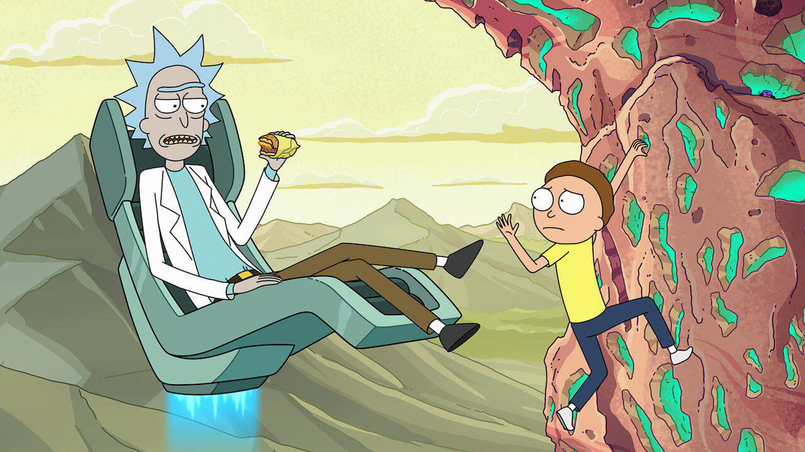

<!DOCTYPE html>
<html lang="es-MX">

</html>

<head>
    <meta charset="UTF-8">
    <meta http-equiv="X-UA-Compatible" content="IE=edge">
    <meta name="viewport" content="width=device-width, initial-scale=1.0">
    <meta name="author" content="Mi nombre">
    <meta name="description" content="El  área  de  aprendizaje  de  MDN  pretende  proporcionar  a  los 
recién  llegados  a  la  web  todo  lo  que  debenx  saber  para  empezar  a  desarrollar  páginas  web  y 
aplicaciones web.">
    <link rel="stylesheet" href="styles/estilos.css">
    <script src="scripts/codigo.js"></script>

    <link rel="shortcut icon" href="favicon.ico" type="image/x-icon">
    <link rel="stylesheet" href="my-css-file.css">
    <script src="my-js-file.js"></script>
    <title>Document</title>

</head>

<body>
    <p>Ejemplo Japonés: <span lang="ja">ご飯が熱い。</span>.</p>
    <p>Ejemplo japonés: ご飯が熱い。</p>
    <p>Ejemplo español: Mañana es miércoles</p>

    <h1 id="la_noche">La noche aplastante</h1>

    <h6>Por: Chris Mills</h6>
    <h3><em>Capítulo 1: La oscura noche Era una noche oscura.</em></h3>
    <p>En algún lugar, un búho ululó. La lluvia azotó el...</p>
    <br>
    <h3><em>Capítulo 2: El silencio eterno.</em></h3>
    <p>Nuestro protagonista nisusurrar pudo al ver esa sombría figura ...
        El espectro habla Habían pasado varias horas más,
        cuando de repente el espectro se incorporó y exclamó: <strong>"¡Por favor, ten piedad de mi alma!"</strong>
    </p>
    <br>
    <ol>
        <li>Pela el ajo y picarlo en trozos gruesos.</li>
        <li>Retira las semillas y el tallo del pimiento, y cortarlo en trozos gruesos.</li>
        <li>Mete todos los alimentos en un procesador de alimentos.</li>
        <li>Pica todos los ingredientes hasta conseguir una pasta.</li>
        <li>Si deseas un hummus "grueso", procésalo corto tiempo.</li>
        <li>Pica durante más tiempo si se desea obtener un hummus "suave".</li>
    </ol>
    <br>
    <p>Me <em>alegro</em> de que no llegues <em>tarde</em>.</p>
    <p>Este líquido es <strong>altamente tóxico</strong>.</p>
    <p>Cuento contigo. <strong>¡No llegues tarde!</strong></p>
    <p>Este líquido es <strong>altamente tóxico</strong>
        si lo bebes, <strong>podrías <em>morir</em></strong>.</p>

        <a href="https://www.mozilla.org/es-ES/">
            
           </a>

    <p>Un enlace <a href="contactos/contacto.html">página de contactos</a>.</p>

    <p>Un enlace <a href="proyectos/proyecto.html">proyectos</a>.</p>
    <p>Un enlace <a href="documentos/tarea1.pdf">tarea</a>.</p>
    <p>Un enlace <a href="personales/info/personal.html">proyectos</a>.</p>


    <p>¿Quieres leer la noche aplastante?
        <a href="index.html#la_noche">La noche aplastante</a>.</p>
    

        

</body>

</html>